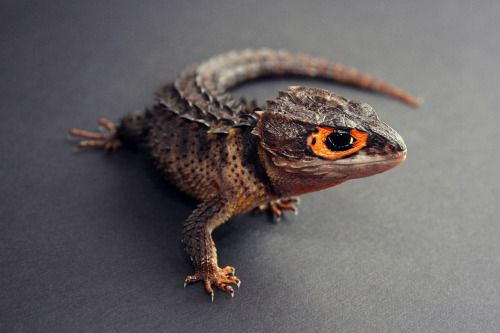

Flying squirrels pet

ABOUT
If cared for properly, flying squirrels can be affectionate pets. The first few weeks after bringing them home is the most important. Hand feeding and daily handling will help them bond with you.
Savannah Cats

ABOUT
The Savannah is a hybrid cat breed. It results from a cross between a serval and a domestic cat. This hybridization typically produces large and lanky offspring with vibrant spotted coats. Wikipedia Origin: United States Higher classification: Cat Rank: Hybrid
Fennec Fox

ABOUT
The fennec fox is a small crepuscular fox native to the deserts of North Africa, ranging from Western Sahara to the Sinai Peninsula. Its most distinctive feature is its unusually large ears, which serve to dissipate heat and listen for underground prey. The fennec is the smallest species of fox. Wikipedia Height: 20 cm (Adult) Scientific name: Vulpes zerda Conservation status: Least Concern Encyclopedia of Life Length: 30 – 41 cm (Adult, Without Tail) Mass: 0.68 – 1.6 kg (Adult) Trophic level: Omnivorous Encyclopedia of Life Family: Canidae
Bearded Dragon Predators and Threats

ABOUT
Snakes, birds, dingoes, goannas and crocodiles are all predators of a bearded dragon.
Ball python

ABOUT
Ball python
Ferret as a pet

ABOUT
Ferrets are members of the weasel family that have been domesticated for over 2000 years. They are highly intelligent and social pets and, even though they seem just like a small, easy to care for a pocket pet, they are a big responsibility and often require just as much care as a cat or dog, if not more! ABOUT FERRETS.
Smith's Redknee Tarantula Spider

ABOUT
About Brachypelma smithi is a species of spider in the family Theraphosidae native to Mexico. It has been confused with Brachypelma hamorii; both have been called Mexican redknee tarantulas. Mexican redknee tarantulas are a popular choice as pets among tarantula keepers. Wikipedia Conservation status: Near Threatened Encyclopedia of Life Class: Arachnida Genus: Brachypelma Kingdom: Animalia Phylum: Arthropoda Species: B. smithi Subphylum: Chelicerata
lizard pet
ABOUT
Each lizard will have its own temperament and personality. Some lizards are outgoing and loved to be handled every day. Others are shy and prefer being in their cages. You should also know that most lizards can live for a decade or two, so make sure your lizard fits your lifestyle and handling abilities.
Iguanas Reptiles

ABOUT
Iguana is a genus of herbivorous lizards that are native to tropical areas of Mexico, Central America, South America, and the Caribbean. Wikipedia Clutch size: Green iguana: 20 – 71, Marine iguana: 1 – 6, Blue iguana: 1 – 21 Scientific name: Iguana Rank: Genus Higher classification: Iguanids Family: Iguanidae Kingdom: Animalia
gecko lizard

ABOUT
Geckos are small, mostly carnivorous lizards that have a wide distribution, found on every continent except Antarctica. Belonging to the infraorder Gekkota, geckos are found in warm climates throughout the world. They range from 1.6 to 60 centimetres. Wikipedia Lifespan: Leopard gecko: 15 years Clutch size: Texas banded gecko: 1 – 2 Length: Sphaerodactylus ariasae: 1.6 – 1.8 cm Clade: Gekkonomorpha Class: Reptilia Infraorder: Gekkota; Cuvier, 1817
Peters's elephantnose fish

ABOUT
Peters's elephant-nose fish is an African freshwater elephantfish in the genus Gnathonemus. Other names in English include elephantnose fish, long-nosed elephant fish, and Ubangi mormyrid, after the Ubangi River. The Latin name petersii is probably for the German naturalist Wilhelm Peters. Wikipedia Conservation status: Least Concern Encyclopedia of Life Scientific name: Gnathonemus petersii Higher classification: Gnathonemus Rank: Species Family: Mormyridae Kingdom: Animalia Order: Osteoglossiformes
Freshwater African Butterflyfish

ABOUT
The freshwater butterflyfish or African butterflyfish, Pantodon buchholzi, is the only extant species in the family Pantodontidae within the order Osteoglossiformes. It is not closely related to saltwater butterflyfishes. Wikipedia Family: Pantodontidae Order: Osteoglossiformes Species: P. buchholzi
Fire Eel

ABOUT
The fire eel is a relatively large species of spiny eel. This omnivorous freshwater fish is native to in Southeast Asia but also found in the aquarium trade. Although it has declined locally because of this trade and overfishing for food, it remains common overall. Wikipedia Scientific name: Mastacembelus erythrotaenia Family: Mastacembelidae
ONLINE_SHOPPING
1.PETS
2.PLANTS
3.PETS-ACCESSORIES
4.PLANTS-ACCESSORIES
5.PETS-SPA & PETS-CARE
6.PLANTS-CARE
7.ADD-YOUR PRODUCTS
COSTOMER POLICIES
CONTACT US
TERMS OF USE
TRACK ORDERS
SHIPPING
RETURNS
PRIVACY POLICY